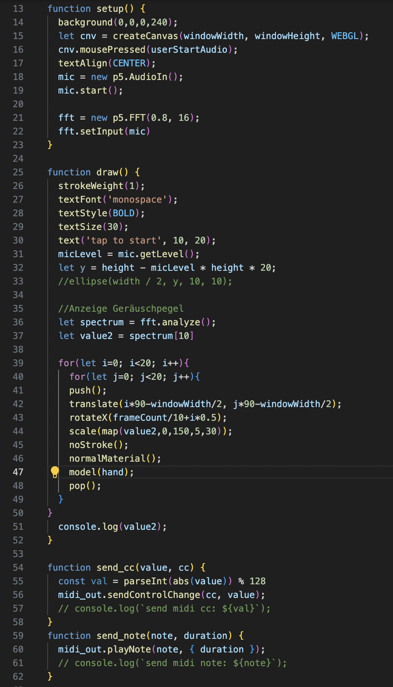
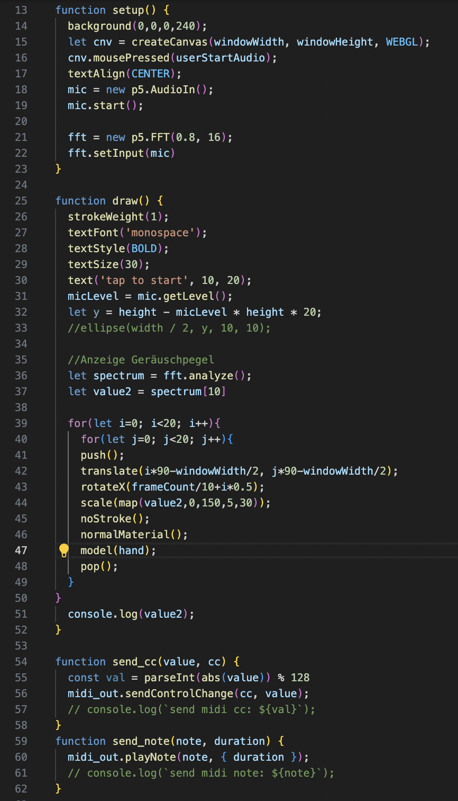

versuch01 und 02
Hier habe ich versucht sehr grossflächig eine Visualisierung zu machen, die sich mit der Lautstärke verändert. Die 3D-Hände sind in einem Raster verteilt und drehen sich um die X-Achse, aber alle ein bisschen versetzt, sodass es aussieht wie eine Welle von Händen. Die Lautstärke bestimmt hier die Grösse der Hände, d. h. je lauter es wird, desto grösser werden die Hände. Hier habe ich noch mit dem Feedback gearbeitet, d. h. es wird sichtbar, wo die Hände sich im vorherigen Frame befunden haben. Der zweite Versuch funktioniert gleich wie der erste, nur sind hier die Hände in nur einer Reihe angeordnet und sie drehen sich alle gleich um die X-Achse, so lässt sich der Lautstärkeunterschied besser beobachten.
 

versuch03
Im letzten Versuch wollte ich versuchen einen «Applaus’o’meter» herzustellen, also ein Messsystem, das die Lautstärke des Applauses anzeigt. Hier bestimmt die Lautstärke nicht nur die Grösse der Hände, sondern auch die Position in der Höhe. Je lauter es wird, desto grösser und weiter oben sind die Hände und da ich auch hier mit einem leichten Feedback gearbeitet habe, wird sichtbar, welche Rekordlautstärke erreicht wurde. Um die Gebärde für Applaus zu imitieren, drehen sich die Hände auch unregelmässig nach rechts und links.